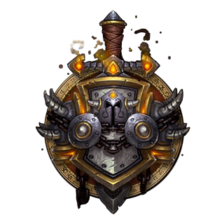
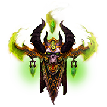
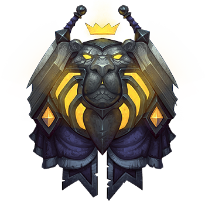
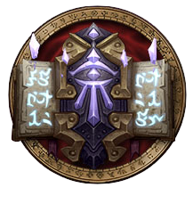
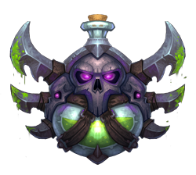
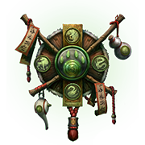
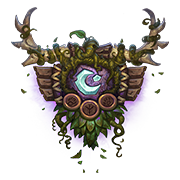

Guerrier
Depuis que la guerre fait rage, des héros de toutes races ont cherché à maitriser l'art du combat. Les guerriers combinent force, autorité et maîtrise des armes et des armures pour causer des ravages dans des combats épiques.

Chasseurdu démons
Les chasseurs de démons sont porteurs d’un héritage maléfique qui terrorise leurs ennemis. Convaincus qu’elle est essentielle pour tenir tête à la Légion, ils se vouent à une magie gangrenée, une énergie qui menace le monde d’Azeroth depuis bien longtemps.

Paladin
Le paladin observe fidèlement ces règles : protéger le faible, faire régner la justice et vaincre le mal jusque dans les recoins les plus sombres de ce monde. Ces saints guerriers sont dotés de solides armures.
Prêtre
C’est au spirituel que les prêtres ont consacré leur vie et c’est en étant au service des autres que leurs actes traduisent la force de leur foi. Depuis des millénaires, ils sont sortis du cadre leurs alliés sur les terres dévastées par la guerre.
Shaman
Les chamans font appel à des puissances élémentaires. Cela amène le chaman à communier avec des forces capricieuses. Les éléments sont chaotiques et ils se déchaînent les uns contre les autres dans une fureur primale permanente.

Mage
Les étudiants les plus intelligents peuvent envisager une carrière de mage. Comme la magie que manipulent les mages est dangereuse, elle n’est enseignée qu’à ceux qui la pratiquent avec respect et assiduité.

Voleur
Un seul code pour les voleurs : remplir le contrat. Assassins mortels et maîtres de la furtivité, ils approchent leurs cibles par derrière, frappent un organe vital et s’évanouissent dans l’ombre avant que leur victime ne touche le sol.

Moine
Quand les pandarens étaient sous la coupe des mogu, ce sont les moines qui apportèrent l’espoir à un avenir qui paraissait bien terne. Ils se concentrèrent sur le contrôle de leur chi et l’apprentissage du combat à mains nues.

Druide
Les druides font appel aux pouvoirs de la nature pour protéger la vie. Avec de l’expérience, les druides peuvent déchaîner leurs énergies brutes contre leurs ennemis et faire s’abattre à distance sur eux la fureur des cieux.